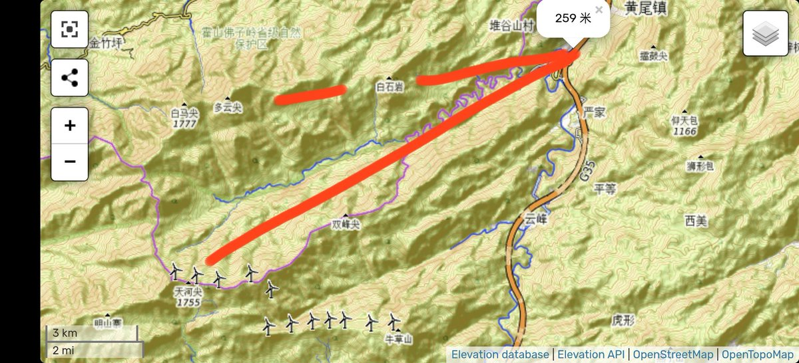

水母雨🍥
@ena1_mizuki
@LMegurine03 嗯看起来距离和方位角都差不多，应该是天河尖，山上的风车是可以开车上去的，欢迎再来玩呀 ^_^

Luka Megurine 03（互fo
@LMegurine03
我回忆了一下，那一张是在黄尾立交拍的，我感觉大概率是天河尖，地图上看视线沿着山谷的方向基本没有遮挡，你说的也没有问题，白马尖是看不到的，会被前面的白石岩挡住，海拔大概1270m左右，所以这一段能看到最高的应该就是天河尖了……这一段风景确实不错，要不是赶路一定得下去看看 https://t.co/GhoZYUU35U https://t.co/lv68GvOhu5